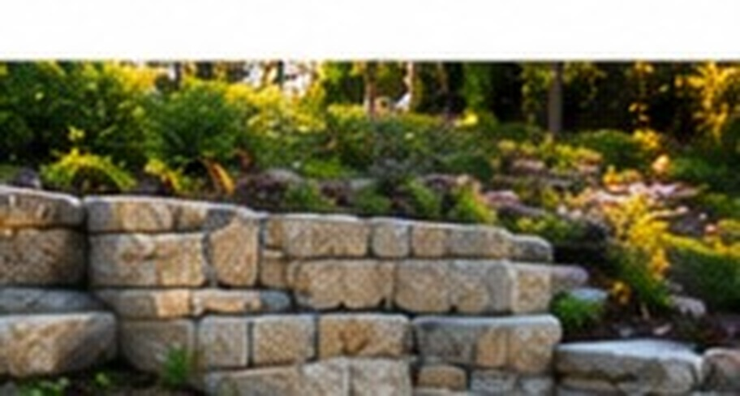
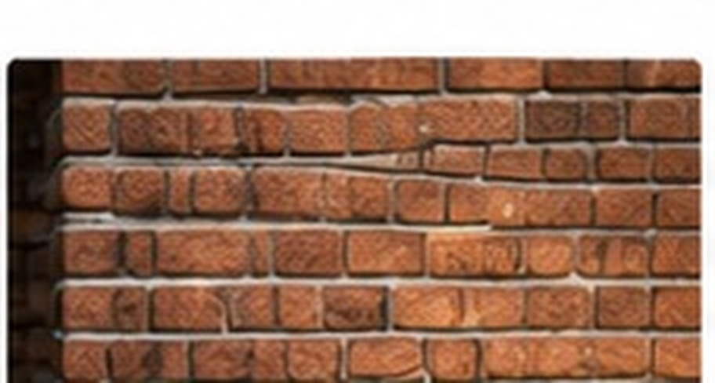
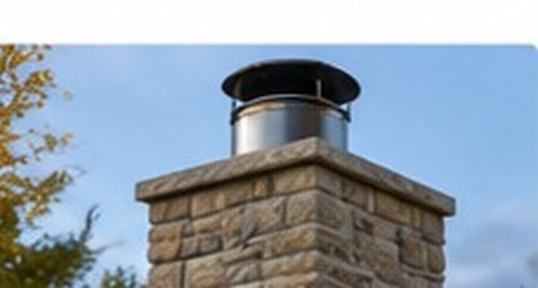
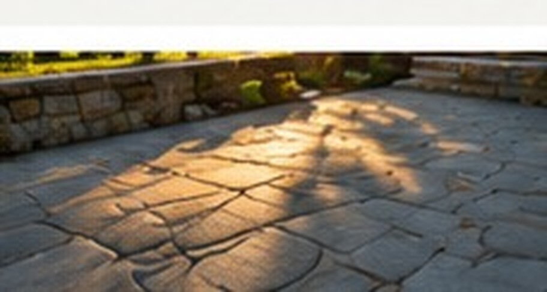
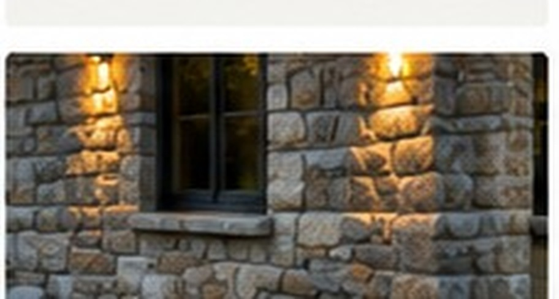
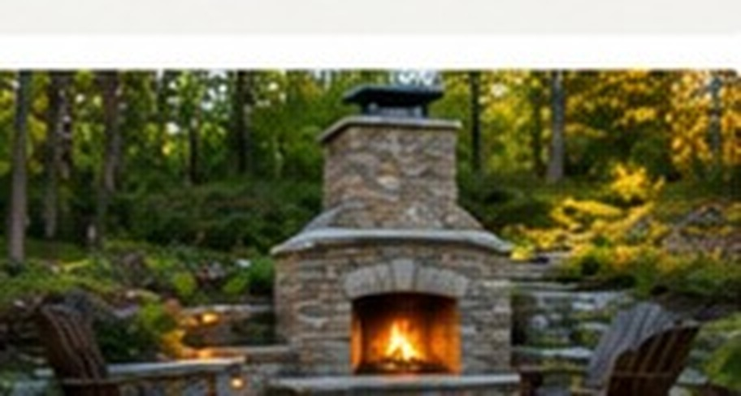

Natural stonework
Enduring character
Stone veneer, feature walls, garden walls, steps and architectural accents can add texture and permanence to exterior and interior spaces.
Natural stone. Timeless brick. Chimneys and architectural details built to last.
Discuss Your Project ↗Masonry gives a home texture, structure and a sense of permanence. Whether the project calls for natural stone accents, carefully integrated brickwork, chimney restoration or outdoor features, materials and details should respect the existing building and Ontario’s climate.

Stone veneer, feature walls, garden walls, steps and architectural accents can add texture and permanence to exterior and interior spaces.

Brick repairs, repointing, new brick features and carefully matched additions help preserve a home’s character while addressing weather exposure.

Chimney masonry, caps, crowns, flashing coordination and visible deterioration deserve careful inspection and appropriate repair planning.

Stone or brick front steps, landings, pillars and porch details can make an entry more welcoming while improving practical circulation.

Garden walls, patio borders, outdoor fireplace surrounds and landscape masonry extend the architecture of the home into the yard.

Thoughtful material selection, mortar compatibility and careful detailing help new work sit comfortably alongside existing masonry.
Tell us about your space, materials and goals. We can discuss practical options for your property and the next steps in planning.
Contact Oakwaters ↗